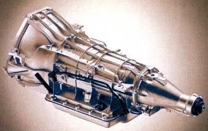
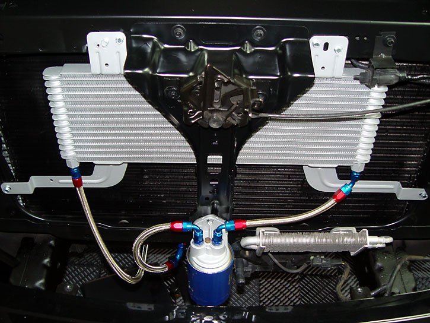
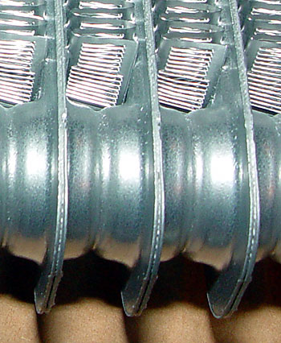
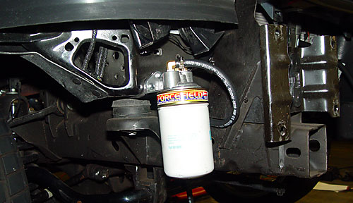
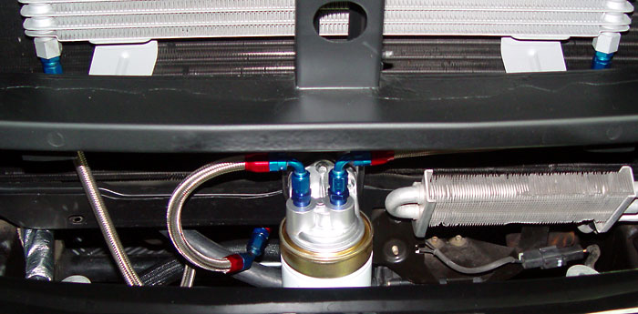
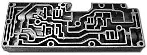
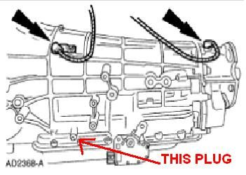

|
Transmission Reliability Upgrades |
||
|
SVT raided the Ford parts bin for a tranny which would take the immense torque of the blown 5.4. The equally massive 4R100 from the diesel Super Duty is the only one which would work--and just barely. The Lightning engine is rated at 450 lbs. ft. of torque at the crankshaft. The 4R100 is rated at 1,000 lbs. ft. But the torque converter has a 2X multiplication factor. So the 4R100's capacity is 90% used up with a stock engine. It should be no surprise that transmission failures are common with modified Lightnings.
According to the Automatic Transmission Rebuilders Association (1) 90% of all transmission failures are caused by overheating, (2) if fluid temps can be held to 175�, ATF will last almost indefinitely, and (3) as a rule of thumb, every 20� increase in operating temperature above 175� halves the life expectancy of a transmission. According to 4R100 guru Gregg Evans: "Should run around 150-190 most of the time, anything over 200 is something you should watch, if it stays above 200 most of the time there is a problem."
But raw torque seems to be far more of a problem with Lightnings than heat. Except in extreme conditions, the stock cooler seems to work quite well, keeping the fluid temps in the safe range. |
| The principle of a deep pan is simple -- more fluid takes longer to heat up and takes longer to chemically break down (B&M recommends temps between 160 and 200). Plus, unlike the stock pan, aftermarket pans have a drain plug. For all of the available pans, click here. |
|
Installation tips: Get a huge (15 qt.) drain pan. Get 10 quarts of ATF (Mercon, NOT Mercon V). Jack the truck up as high as you can get it -- you will appreciate the extra arm room later. Just punch a hole in the stock pan to drain. Use RTV to hold the gasket in place while positioning the replacement pan. |
|
A deep pan will only delay the time it
takes for the fluid to get hot--they will not change the transmission
temperature equilibrium point. A transmission cooler will actually
lower the equilibrium temperature.
A transmission cooler may not be needed, but it sure can't hurt. I have never seem more than about 150-160� (measured in the pan). Several experienced road racers have, however, maintained that an extra transmission cooler is required to handle the heat of open-track racing. In addition to open track events, I plan to run open-road events in Nevada this year, so the tranny needs to be able to take sustained high-speed driving in desert heat. Note that tranny fluid, like engine oil, can be overcooled -- if the fluid is too cool, it does not properly lubricate the engine. To prevent this from happening, any additional coolers should be installed before the radiator cooler. One of the reasons that OEMs integrate tranny coolers into the radiator is to allow the water to warm up the tranny fluid, bringing it to normal operating temps quicker. I chose the Ford Super Duty (F250) transmission cooler (XC3Z-7A095-CA). This is a really huge cooler (7" x 20") for only $100 (from fordpartsonline).  The attention to detail on the Super Duty is remarkable. It is is a plate-and-fin design, which means that the fluid flows in parallel through all of the channels at once, which means little pressure loss. Additionally, there are thousands of tiny aluminum fins, each of which is cut into tiny louvers like shark gills, with each edge turned just a little to catch the wind. Neat. I coated my with baked-on silver hi-temp paint. While a coat of paint can hinder heat transfer, the alloy used on the cooler corrodes quickly, and corroded metal has poor transfer anyway. I did not even try to coat all of the tiny fins. The SD cooler fits like a glove. Plus, the use of genuine Ford parts may keep the warranty denial Nazis at bay. The part listing for this cooler was "F150/F250," so it may even be OEM on some F150 packages. Installation instructions are here. |
|
An auxiliary filter
is also a good idea. 4R100 guru Gregg Evans ("Factory Tech") swears by the
Summit-branded remote filter kit (identical to the Perma-Cool branded kit
to the right). This filter uses a standard full-size Ford oil filter
(3/4"-16 threads) to provide
cheap and effective filtration.
Additionally, people have reported significant (15-30�) temperature drops
from just a remote filter.
I no longer have the filter in the location shown above. It's a fine location, but due to interference with brake ducting, I moved just behind the heat exchanger.  Also shown is a Magnefine Forcefield magnetic pre-filter. This slick little device has a huge magnet which the incoming oil must flow over. Another option is just to plumb in a conventional Magnefine filter, which comes with compression fittings for cutting into the hard lines (which are 3/8" OD). I already had the Perma-Cool setup, so I just got the pre-filter. The stock cooler fittings are 3/8" inverted flares (5/8-18 thread). Gregg Evans recommends AN-6 lines if you decide to go stainless. Some have questioned whether an external filter is a good idea. Consider this (from a filter kit seller): "Automatic transmissions have internal filters designed to capture only large particles. These filters are designed as a pickup to keep large particles from flowing through the transmission. These filters are on the suction side of the pump. Fine filtration in the pan is not an option for the transmission manufacturers due to the fact that transmission pumps should not be restricted. The only way to get fine filtration for a transmission is with an external transmission filter kit on the push side of the pump. The 4R100/E4OD and many other transmissions were never equipped with this type of external filter. The Allison in the Chevy and many medium duty and heavy duty trucks come equipped from the factory with an external transmission filter. This is not a new idea in transmission maintenance and protection. . . . How it works: Our filter is on the "push" side of the pump. This location allows for a filter with increased efficiency -- or smaller micron rating. Normally, you have the dirty fluid in the pan. The OEM filter hopefully catches the really big particles before it enters the valves and pump. After running through the transmission, it leaves as "dirty" fluid. This fluid will have clutch dust and other impurities which are all normal in any automatic transmission. This dirty fluid would be recirculated back to the pan. With our kit you can catch dirty fluid BEFORE it makes back to the pan. Keeping the fluid clean, keeps your valve body clean which keeps your transmission shift quality at its highest. After installation of our external kit the filter in the pan now acts simply as a pickup for the pump and virtually never needs changed. . . . Our filters have a micron rating of 22 microns. That is plenty for any transmission. Pan filters have no real micron rating. Many are nothing but screens." "Question: What is the micron rating of the OEM unit and why is yours a 22 micron element? Answer: There isn't a rating on the OEM filter. If you had to rate it, according to Baldwin, it would be about 100 microns. It's basically a screen. 22 microns is smaller than the smallest clearance in the transmission. We could definitely put a smaller micron filter on the housing, but the result would be less oil actually filtered in each pass as more fluid would pass through the bypass port because of increased resistance to flow through the filter. Because the 22 micron element was small enough to keep the system clean and allow all the fluid to be filtered in a single pass, it was the perfect choice." On the subject of which filter to use, racing oil filters are a good choice, but they need to have a bypass. If the filter clogs, then the tranny could be starved for fluid and blow. SWThomas did some research at a local NAPA store: Well, I went to NAPA and had a little discussion with the gentleman the worked there. He said that the R rated [i.e., racing] filters like the 51515R should only be used for racing applications and shouldn't be used on street driven applications. He said that they're meant to be used for a few runs at the track and then changed out, not for a DD. We got to looking in the catalog and the filter that we came up with is the NAPA Gold 1622 which is an actual transmission filter not an oil filter. He said that it would definitely flow better than a regular oil filter because the mesh filter inside isn't woven as tight. So this is what I'm going to try. On further research on this filter, I found the following: NAPA 1622 (HP-1 cross reference) - 5.22" H x 3.7" OD, by-pass valve setting at 7-9 PSIG. Anti-drainback valve. No GPM listed but Store called tech line and was told > 10GPM. Listed as a transmission filter for the HT-700 Allison trannys and +96 Ford Trucks. Note that most remote mounts use a 3/4-16 thread filter, which is the thread size for the 51515R, 1622, and HP-1. |
|
Shift kits increase line pressure to the clutch mechanism for firmer and quicker shifts, lower heat, and lower wear, at the expense of the comfort of smoother shifts. This will increase the pressure to the clutches, causing the transmission to shift quicker. The quicker the shifts, the lower the heat is generated by the clutches during shifts. |
|
I chose the already-assembled Factory Tech transmission valve body rather than a line valve kit. Lightning transmission guru Gregg Evans, a full-time Ford transmission tech, makes these parts. Gregg has his own forum at NLOC. Gregg warrants the valve bodies for life. For reasons why a valve body is better than a boost valve alone, click here. |
| An Auto Meter sender fits right in the hole in the image to the right. |
|
Aftermarket
torque converters are supposed to be more reliable than stock, but it
seems that most people buy them for a higher stall speed. A higher stall speed allows
the truck to get off the line better without excessive wheelspin.
According to Transmission Crafters: "To understand stall torque converters, one needs to first understand the how the stall of a converter is determined. The stall of a converter can be determined by placing the transmission in forward gear, applying and holding the brakes, and depressing the throttle until the engine can no longer increase RPM or the brakes no longer hold the vehicle. The maximum RPM the engine developed is considered the stall speed of the converter." Muscle Mustangs and Fast Fords states that: "When powerbraking our Lightning (with the stock tires in place), the stock converter stalls to approximately 1200 mm. Rev it higher and the tires will spin. Our new Precision converter is designed to stall between 2400-2600 rpm, and that should help quarter-mile ET." See also How Stuff Works. In a Muscle Mustangs and Fast Fords test, the test Lightning ran a best of 13.132 @ 103.83 MPH. After installation of a Level 10 converter, the times dropped to a best of 12.723 @ 104.84! For a PDF version of the full article (3.9 MB), click here. I don't have a clue what other benefits, if any, an aftermarket torque converter is supposed to provide. If you have any information to add, please send me an e-mail.
|